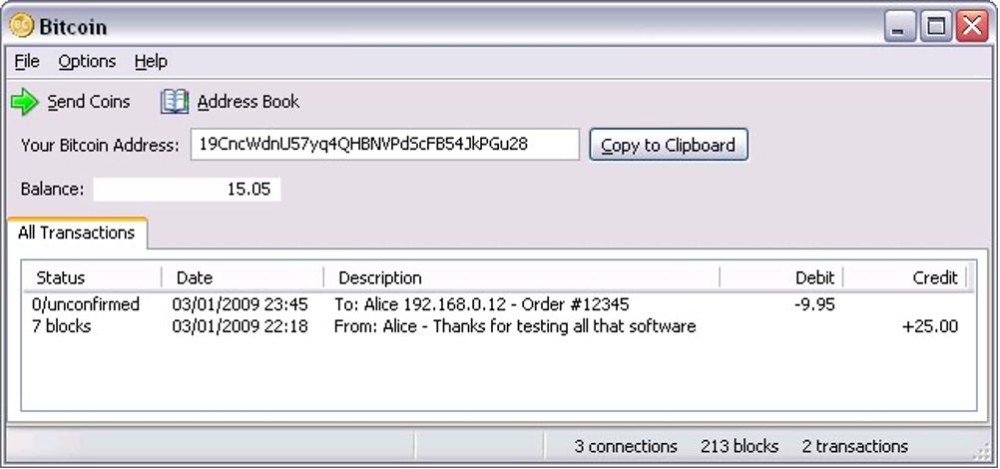

比特币研究：寻找中本聪系列【二】——中本聪匿名的原因
Updated: Nov 29, 2022
本系列特邀作者：祝维沙，知名华人企业家
匿名对加密圈外的人来说是很难适应的一个概念，说到比特币，这是第一个问题，为什么要匿名？
2.1 财不外露的隐私保护
中本聪是匿名，这是市场公认的看法。但是为什么匿名就有很多说法。比如，有人说密码朋克认为匿名酷，还有说法是密码朋克们的隐私保护习惯，或者说是避免专利责任。
专利原因也有一点道理。但是作为开源运动，不开源的东西也不采用，开源是有标准的，至少要注明符合MIT的版权标准，从而保证第三方的随意使用。比特币注明了符合这个标准。专利是一个因素，我们没有见过区块链的技术专利官司。名誉权的官司也很难打，匿名你如何打？告谁？这点确实是匿名的一个用途。
匿名为了隐私保护是密码朋克的主张，他们中有一类人是黑客，在他们的眼里互联网就是裸奔，不暴露自己身份的最好办法就是匿名。他们需要匿名的环境，有自己的货币，谁也不能控制谁，是一个世外桃源。如果不与外界连接也没有问题，但是与外界连接，也就会留下行踪。在区块链盗币常有发生，但是如何把盗得币花出去绝非易事，账本都是公开的，每一步都可追踪，一旦转到法币渠道去提现，立刻暴露实名。真想抓很容易。中本聪的币被严密监控，他有命挣没命花。因为一花就暴露。除非到了比特币本位，比特币无需转换成法币可以直接使用。
在现实环境下，不存在世外桃源，匿名有很大的局限性，这是阻碍区块链始终无法和现实社会顺利接轨的原因。隐私是分级的，不同人对隐私的要求也不一样，如果匿名做不到对隐私的分级控制，对隐私的保护也是粗糙的。
匿名最大的用途是防止网上追踪。中本聪把匿名用到极致。那又有什么用？只要你留痕，在高手面前也同样不堪一击。就看是否有必要。因为通过逻辑分析根本无需网上追踪。
我们见到许多密码朋克都用真名与他人交流，而像中本聪这样匿名到任何痕迹不漏地十分少见。中本聪与人通信要求用PGP加密软件加密，上网用洋葱路由器（Tor），还不时更换时区。下面这张快照记载着比特币最早的区块数据，没有时区，如何能够证明中本聪在英国？（1）中本聪设计的种种保护，外人要通过网上痕迹找到他几乎是不可能的。加上中本聪有意识地变化说话用词，卖破绽给研究者，我们不是历史当事人，事后还原真相难度很高，单一的研究手段大家都尝试过，不足以找出中本聪，因为你的对面是一个高手。真的没有痕迹吗？唯一的方法要靠证据链，要看你有没有完善证据链的办法。常用的方法是找不出中本聪的。监听没有用，寻找物理痕迹的高级仪器没有用。寻找数据证据，要有很高深的电脑知识和逻辑推断能力，这是综合研究能力即学者能力。

Snapshot of the early Bitcoin client. Credit: Deep celeron早期比特币客户端的快照
对于中本聪这样的密码朋克来说，比特币设计的保护隐私功能堪称完美，比如全世界都在找中本聪就是找不到。而如果是普通用户使用比特币系统转账，就和裸奔差不多。一般不会隐藏IP，使用的过程中很容易关联到用户的真实身份。由此，以太坊总账干脆采用账户模式，对于生态开发者和用户都降低了使用难度，但也降低了隐私保护的力度。以太坊虽然降低了隐私保护也没有见到普通用户抱怨。普通用户无感，只有极客有感。
具有中本聪隐私保护水平，比特币账本不可能暴露持币人的币数。比特币公账本是公开的，如果没有匿名，谁有多少钱一目了然。如果这样，不符合人类财不外露的习惯。当然有些情况下要证明自己有多少钱，比特币账本的披露权在持有人。所以匿名设计是可公开账本的需要。经过13年，人们都没有找到中本聪。匿名带来了一个最大的好处是避免法律责任。
2.2 避免法律责任
中本聪不留痕，匿名，隐身至今，他担心什么？他担心的主要原因只有一个，就是担心触犯法律。
通过保持匿名，避免了不利的法律后果。对此密码朋克社区也是有共识的。中本聪接受过熏陶。大众媒体对密码朋克的第一次讨论是在1993年《连线》杂志的一篇文章中，题目是《密码叛徒》。文章写道：“障碍是政治性的——政府中一些最强大的力量致力于控制这些工具（注：加密算法和工具）。简而言之，解放加密货币的人和压制加密货币的人之间正在进行一场战争。在这个会议室周围的看似无害的一群人代表了亲加密力量的先锋。尽管战场看似遥远，但赌注并非如此：这场斗争的结果可能决定我们的社会将在 21 世纪给予我们多少自由。对于密码朋克来说，自由是一个值得冒险的问题。”（2）当年加密技术是作为军火禁止出口的。菲尔·齐默尔曼（Phil Zimmermann）的PGP加密技术在列， 他把PGP源码印成书出口，用于反抗出口禁令。原因是美国的言论自由受保护，印成书籍就属于言论自由的范围。后来他遭到美国政府有关部门的起诉，结果政府方面败诉。密码朋克和政府的斗争就没有停止过。他们的努力不是没有意义的，隐私保护已经成为西方国家的共识。感谢他们的努力和无私的付出。我们现在很难理解他们这种对受迫害的担心。其实比特币系统也是行走在这样一个灰色地带。
“乔治华盛顿大学法学院的名誉教授刘易斯·所罗门曾写过关于替代货币的文章，他认为创造比特币可能是合法的。他说：‘比特币正处于灰色地带，部分原因是我们不知道它是否应该被视为一种货币，一种像黄金这样的商品，甚至可能是一种证券。’然而，灰色地带是危险的，这可能是中本聪秘密构建比特币的原因。 这也可以解释为什么他使用与盗版电影和音乐下载相同的点对点技术构建系统，这样一来，用户之间是相互连接，而不与中央服务器连接。 没有公司在控制，没有办公室可以突袭，也没有人可以逮捕。”（3）
中本聪2008年11月6日说：“政府擅长切断中央控制的网络，如Napster（音乐自由下载工具被关闭），但像Gnutella（一种文件共享网络）、Tor（洋葱路由器）这样的纯点对点网络看起来还能挺得住。”（4）可以看出中本聪深受密码朋克社区的影响，Gnutella 和Tor都是匿名工具。匿名是他们的武器。他还说：“我们可以在军备竞赛中赢得一场大战，并在几年内获得一个新的自由土地。”（4）他认为政府是无法关闭比特币的，至少是几年内做不到，只要匿名做得好，人也抓不到。
如果匿名做得不好那就不好说了。
1998 年，夏威夷居民伯纳德·诺豪斯 (Bernard NotHaus) 涉足了一种名为“自由美元”的新型货币形式，结果是灾难性的：他被指控违反联邦法律，并被判处 6 个月软禁和 3 年缓刑。（5）
电子黄金 e-Gold 是最早的数字货币，系统于 1996 年在线推出， 在 2006 年的鼎盛时期，每年处理价值超过 20 亿美元的交易。2007 年，政府以洗钱为由引起争议，e-Gold到2011年被停止转账。
e-Gold 是互联网支付的早期先驱。该公司是第一个成功的在线支付系统。它开创了许多电子商务系统和技术，包括通过 SSL 加密连接进行支付，并提供 API 使其他网站能够使用 e-Gold 的交易系统构建服务。尽管 e-Gold 最终被美国政府关闭，但该案的联邦法官裁定 e-Gold 的创始人“无意从事非法活动”。2008年11月，e-gold公司首席执行官道格拉斯－杰克逊（Douglas-Jackson）被判处300小时的社区服务，200美元的罚款，以及三年的监督，包括六个月的电子监控家庭拘留。
e-Gold 的失败归根结底是因为他们无法提供可靠的用户识别系统，以及未能提供可行的争议解决系统来识别和切断用户社区中的非法和滥用活动，还有他是中心化的。金融密码学家观察到，“尽管比特币具备去中心化的性质，比特币重复了与e-gold相同的基本错误，网络犯罪浪潮可能会使比特币走向类似的结局。”（6）（7）
这些都是早期的事件。中本聪心知肚明。到了今天，阴影没有过去。
2021年，美国财长耶伦建议“缩减”比特币等加密货币，称这些加密货币主要用于非法金融活动。（8）
耶伦的说法没有道理，法币就可避免非法金融活动？借口！比特币动了各国政府的奶酪。他们无法监管是根本。法律是他们制定的，他们管不住比特币，可以管住和法币的所有连接渠道，目前看全球都关闭比特币的可能性不大，限制的可能性很大。幸运的是美国的自由和法治环境，最终比特币会帮助美国完成救赎。即：减少债务，形成比特币美元。这又是一个很有意思的话题。我们后面会详细描述。美国监管当局看过我们的方案和描述，相信会改变对比特币的看法。
到此总结一下，中本聪匿名和隐身，是出于对法律的不确定性的担忧，他不现身就是一直还在担忧。他怕被伤害，也目睹了人间惨重的伤害的历史图景，他所看到的图景和我们看到的不一样。中国对加密货币的处理就展现了这样一幅图景。同样，每一个深入其中的人都有这种担心。他的后继者加文在2010年加入比特币开发时就研究了法律问题。他说：“我在想：我能因为从事这项技术的工作而被捕吗？我会被关进监狱吗？我很确定我不会——这是一个开源项目，我没有试图剥削任何人，也没有人给我任何钱。当局似乎没有很大的空间狠下心来，逮捕我，把我扔进监狱。”（9）此处忍不住赞叹比特币的高明，经济模式的创新，成功地规避执法机关依法关断的可能性，没有集资和融资，系统自动运行。
2.3 影响比特币上涨的关键因素不是匿名
如果比特币不匿名，账本如何公开？从设计上有难度。匿名影响易用性，但是影响比特币的上涨，不止只是一个因素，并且这个问题不难解决。比特币的通胀率已经小于黄金，理论上应该有黄金的市值，现在相比黄金低估了20多倍。说明共识还不到位。从比特币自然成长曲线和132年33个大周期来看，目前在走第四个周期，还是底部周期。如果没有外力促进，共识的广泛建立到上升拐点，至少还要3个周期才能来到。这个拐点的提前到来，有赖于相关参与人的有效努力，包括美联储。
很清楚，这就要解决四个问题：
1）让每一个比特币的参与者都不要担心，就是要让比特币合法化，找一条比特币参与者和监管当局都认可的出路。
2）彻底解决易用性问题。
3）中本聪现身，解决大资金机构担心的中本聪持币等不确定性问题。
4）也是最重要的，补足全球共识。由此，比特币势必进入上升周期。
第一和第二项都不需要中本聪的现身，而第三和第四项都需要他。这就需要知道他是谁？是生是死。显然匿名不是上述四个原因。只是影响对中本聪的寻找。解铃还须系铃人，解掉中本聪头上的雷，此局面可解。
首先要找出中本聪是男是女，多大年龄，看看与你的画像是否接近，不妨在脑子里想一想，发送你的答案到以下网站的论坛中，会得到币或积分的奖励。
参考文献
1. Satoshi Nakamoto
HASEEB QURESHI DEC 29, 2019
2. Crypto Rebels
STEVEN LEVY FEB 1, 1993 12:00 PM
3. The Crypto-Currency
Bitcoin and its mysterious inventor.
By Joshua Davis October 3, 2011
“Lewis Solomon, a professor emeritus at George Washington University Law School, who has written about alternative currencies, argues that creating bitcoin might be legal. “Bitcoin is in a gray area, in part because we dont know whether it should be treated as a currency, a commodity like gold, or possibly even a security,” he says.
Gray areas, however, are dangerous, which may be why Nakamoto constructed bitcoin in secret. It may also explain why he built the code with the same peer-to-peer technology that facilitates the exchange of pirated movies and music: users connect with each other instead of with a central server. There is no company in control, no office to raid, and nobody to arrest.”
4 .Cryptography Mailing List
Bitcoin P2P e-cash paper2008-11-06 20:15:40 UTC
“we can win a major battle in the arms race and gain a new territory of freedom for several years.
Governments are good at cutting off the heads of a centrally controlled networks like Napster, but pure P2P networks like Gnutella and Tor seem to be holding their own.”
Satoshi
5.Bernard von NotHaus, the creator of the Liberty Dollar
https://www.businessinsider.com/bitcoin-history-cryptocurrency-satoshi-nakamoto-2017-12
“In 1998, Hawaiian resident Bernard von NotHaus dabbled in a fledgling form of currency called "Liberty Dollars" to disastrous results: He was charged with violating federal law and sentenced to six months of house arrest, along with a three-year probation. ”
6. FC++: BITCOIN & GRESHAM'S LAW - THE ECONOMIC INEVITABILITY OF COLLAPSE
2012-02-23.
7. E-gold
8. In Janet Yellen suggests 'curtailing' cryptocurrencies such as Bitcoin, saying they are mainly used for illegal financing
Harry Robertson Jan 21, 2021
9. What Satoshi Did Not Know
Gavin Andresen 2015